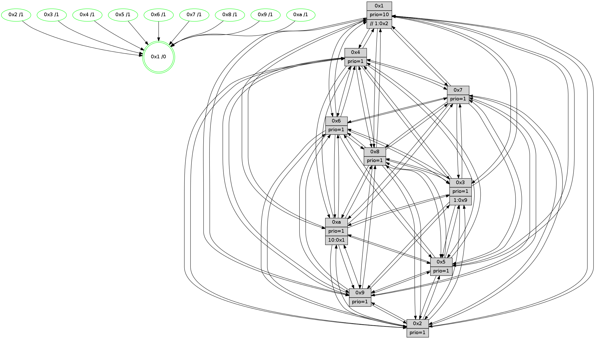

>> << IDX [start] -100 -25 -5 +0 +5 +25 +100 [1050.219069]
 Previous packets
----------------------------------------------------------------------
1045.490284 beacon01(faad) #0 coord=01,02,03,04,05,06,07,0a,09,08 cycle=688.0ms assoc
-- color-indic=1 64 39 14
1045.500265 beacon02(faad) #0 coord=01,02,03,04,05,06,07,0a,09,08 cycle=688.0ms assoc 64 aa 25
1045.510266 beacon03(faad) #0 coord=01,02,03,04,05,06,07,0a,09,08 cycle=688.0ms assoc 64 d0 68
1045.520267 beacon04(faad) #0 coord=01,02,03,04,05,06,07,0a,09,08 cycle=688.0ms assoc 64 a7 82
1045.530266 beacon05(faad) #0 coord=01,02,03,04,05,06,07,0a,09,08 cycle=688.0ms assoc 64 dd cf
1045.540267 beacon06(faad) #0 coord=01,02,03,04,05,06,07,0a,09,08 cycle=688.0ms assoc 64 53 18
1045.550267 beacon07(faad) #0 coord=01,02,03,04,05,06,07,0a,09,08 cycle=688.0ms assoc 64 29 55
1045.560270 beacon0a(faad) #0 coord=01,02,03,04,05,06,07,0a,09,08 cycle=688.0ms assoc 64 58 5e
1045.570271 beacon09(faad) #0 coord=01,02,03,04,05,06,07,0a,09,08 cycle=688.0ms assoc 64 d6 89
1045.580271 beacon08(faad) #0 coord=01,02,03,04,05,06,07,0a,09,08 cycle=688.0ms assoc 64 ac c4
1045.591471 [Hello(2): seq=664 sym=4,7,6,3,9,8,10,1 sysInfo=hasWarning stat=4:14,11,11,8/7:13,11,9,11/6:14,5,1,9/3:12,8,0,7/9:7,7,3,5/8:0,4,12,9/10:4,10,3,10/1:4,7,10,1]
1045.593811 [Hello(5): seq=668 sym=7,6,4,3,1,9,8,10,2 sysInfo=hasWarning stat=7:6,10,12,11/6:3,2,12,0/4:6,13,7,10/3:2,1,1,12/1:10,6,12,1/9:2,14,7,7/8:6,12,3,0/10:14,7,1,7/2:7,13,6,3]
1045.597246 [Hello(1): seq=577 sym=4,2,9,5,10,3,8,6,7 sysInfo=coloring-mode-on,ColoringModeRequestCalled stat=4:2,15,7,2/2:0,8,6,13/9:11,3,4,6/5:3,9,14,6/10:5,0,7,5/3:10,0,10,5/8:5,5,5,1/6:7,0,6,11/7:10,5,5,12]
1045.599858 [Hello(3): seq=668 sym=1,7,6,2,4,8,9,10,5 sysInfo=hasWarning stat=1:3,11,5,0/7:2,8,14,9/6:7,9,14,3/2:5,0,1,13/4:10,0,5,9/8:3,6,14,2/9:1,15,3,12/10:2,13,1,3/5:10,3,10,13]
1045.602737 [Color(10) seq=257 @0:0 prio=1]
1045.603979 [Color(3) seq=297 @0:0 prio=1 >1.@9,1.@a]
1045.605564 [Color(8) seq=290 @0:0 prio=1]
1045.609937 [STC(1) #0.150 tree-change,inconsistent-stability,stable,to-color d=0]
1045.615804 [Hello(6): seq=668 sym=2,3,5,4,7,9,8,10,1 sysInfo= stat=2:13,14,5,3/3:9,6,6,10/5:5,1,5,15/4:8,9,14,3/7:13,6,6,9/9:9,8,6,6/8:6,2,2,3/10:8,11,10,12/1:5,2,10,1]
1045.619268 [Color(6) seq=300 @0:0 prio=1]
----------------------------------------------------------------------
1046.278415 beacon01(faad) #0 coord=01,02,03,04,05,06,07,0a,09,08 cycle=688.0ms assoc
-- color-indic=1 64 85 11
1046.288396 beacon02(faad) #0 coord=01,02,03,04,05,06,07,0a,09,08 cycle=688.0ms assoc 64 16 20
1046.298397 beacon03(faad) #0 coord=01,02,03,04,05,06,07,0a,09,08 cycle=688.0ms assoc 64 6c 6d
1046.308398 beacon04(faad) #0 coord=01,02,03,04,05,06,07,0a,09,08 cycle=688.0ms assoc 64 1b 87
1046.318399 beacon05(faad) #0 coord=01,02,03,04,05,06,07,0a,09,08 cycle=688.0ms assoc 64 61 ca
1046.328397 beacon06(faad) #0 coord=01,02,03,04,05,06,07,0a,09,08 cycle=688.0ms assoc 64 ef 1d
1046.338399 beacon07(faad) #0 coord=01,02,03,04,05,06,07,0a,09,08 cycle=688.0ms assoc 64 95 50
1046.348405 beacon0a(faad) #0 coord=01,02,03,04,05,06,07,0a,09,08 cycle=688.0ms assoc 64 e4 5b
1046.358404 beacon09(faad) #0 coord=01,02,03,04,05,06,07,0a,09,08 cycle=688.0ms assoc 64 6a 8c
1046.368404 beacon08(faad) #0 coord=01,02,03,04,05,06,07,0a,09,08 cycle=688.0ms assoc 64 10 c1
1046.379698 [STC(5)->1 #0.150 tree-change,inconsistent-stability,stable,to-color d=1]
1046.381475 [Hello(10): seq=601 sym=6,2,3,8,7,5,9,4,1 sysInfo=hasWarning stat=6:3,5,9,4/2:6,5,15,7/3:11,15,15,10/8:5,11,2,0/7:3,7,7,4/5:11,5,9,13/9:6,15,9,1/4:14,14,10,8/1:3,8,1,1]
1046.384509 [Hello(9): seq=612 sym=2,5,3,4,7,6,8,10,1 sysInfo=hasWarning stat=2:4,12,3,4/5:10,12,1,4/3:5,9,4,14/4:3,10,14,8/7:14,1,3,10/6:4,5,12,9/8:2,5,5,3/10:7,12,6,3/1:10,6,12,1]
1046.387315 [STC(10)->1 #0.150 tree-change,inconsistent-stability,stable,to-color d=1]
1046.388811 [Hello(4): seq=668 sym=5,7,6,2,3,9,8,10,1 sysInfo= stat=5:13,10,4,13/7:6,11,3,9/6:12,9,2,10/2:15,9,15,11/3:0,7,1,10/9:1,2,9,9/8:10,13,7,4/10:1,1,11,12/1:7,6,11,1]
1046.392274 [STC(4)->1 #0.150 tree-change,inconsistent-stability,stable,to-color d=1]
1046.393595 [Hello(8): seq=612 sym=5,2,3,4,9,6,7,10,1 sysInfo=hasWarning stat=5:14,12,10,15/2:13,9,3,7/3:10,12,7,14/4:7,12,1,9/9:4,2,9,2/6:0,3,7,11/7:1,8,7,2/10:13,8,12,3/1:3,14,8,0]
1046.396426 [STC(8)->1 #0.150 tree-change,inconsistent-stability,stable,to-color d=1]
1046.397708 [STC(2)->1 #0.150 tree-change,inconsistent-stability,stable,to-color d=1]
1046.399162 [Color(4) seq=248 @0:0 prio=1]
1046.400396 [STC(3)->1 #0.150 tree-change,inconsistent-stability,stable,to-color d=1]
1046.402733 [Hello(7): seq=668 sym=2,3,5,6,4,8,9,10,1 sysInfo=hasWarning stat=2:5,4,12,14/3:14,13,9,14/5:0,4,11,1/6:2,14,9,7/4:13,4,4,2/8:6,3,6,1/9:12,9,8,0/10:2,5,13,4/1:14,1,12,0]
1046.406823 [STC(7)->1 #0.150 tree-change,inconsistent-stability,stable,to-color d=1]
1046.408965 [STC(9)->1 #0.150 tree-change,inconsistent-stability,stable,to-color d=1]
1046.411877 [Color(9) seq=274 @0:0 prio=1]
1046.413250 [TreeStatus(5)-.->1 #0.150 tree-change,inconsistent-stability,stable child=1]
1046.416705 [Color(2) seq=273 @0:0 prio=1]
1046.420228 [Color(7) seq=227 @0:0 prio=1]
----------------------------------------------------------------------
1047.066546 beacon01(faad) #0 coord=01,02,03,04,05,06,07,0a,09,08 cycle=688.0ms assoc
-- color-indic=1 64 41 1f
1047.076527 beacon02(faad) #0 coord=01,02,03,04,05,06,07,0a,09,08 cycle=688.0ms assoc 64 d2 2e
1047.086529 beacon03(faad) #0 coord=01,02,03,04,05,06,07,0a,09,08 cycle=688.0ms assoc 64 a8 63
1047.096528 beacon04(faad) #0 coord=01,02,03,04,05,06,07,0a,09,08 cycle=688.0ms assoc 64 df 89
1047.106528 beacon05(faad) #0 coord=01,02,03,04,05,06,07,0a,09,08 cycle=688.0ms assoc 64 a5 c4
1047.116528 beacon06(faad) #0 coord=01,02,03,04,05,06,07,0a,09,08 cycle=688.0ms assoc 64 2b 13
1047.126528 beacon07(faad) #0 coord=01,02,03,04,05,06,07,0a,09,08 cycle=688.0ms assoc 64 51 5e
1047.136533 beacon0a(faad) #0 coord=01,02,03,04,05,06,07,0a,09,08 cycle=688.0ms assoc 64 20 55
1047.146533 beacon09(faad) #0 coord=01,02,03,04,05,06,07,0a,09,08 cycle=688.0ms assoc 64 ae 82
1047.156533 beacon08(faad) #0 coord=01,02,03,04,05,06,07,0a,09,08 cycle=688.0ms assoc 64 d4 cf
1047.167797 [Hello(1): seq=578 sym=4,2,9,5,10,3,8,6,7 sysInfo=coloring-mode-on,ColoringModeRequestCalled stat=4:2,0,7,2/2:0,9,6,13/9:11,4,5,6/5:3,9,15,7/10:6,0,7,5/3:10,0,11,5/8:5,5,5,1/6:8,1,6,11/7:11,6,6,12]
1047.170782 [Hello(2): seq=665 sym=4,5,7,6,3,9,8,10,1 sysInfo=hasWarning stat=4:14,11,11,8/5:0,0,1,0/7:13,12,9,11/6:15,6,1,9/3:13,9,0,7/9:7,7,3,5/8:0,5,12,9/10:5,11,3,10/1:5,7,11,1]
1047.177929 [Color(3) seq=298 @0:0 prio=1 >1.@9,1.@a]
1047.180224 [Color(10) seq=258 @0:0 prio=1]
1047.183977 [Hello(5): seq=669 sym=7,6,4,3,1,9,8,10,2 sysInfo=hasWarning stat=7:6,11,12,11/6:4,3,12,0/4:6,13,7,10/3:3,2,1,12/1:11,6,13,1/9:2,14,7,7/8:6,13,3,0/10:14,8,1,7/2:7,14,6,3]
1047.189520 [Color(6) seq=301 @0:0 prio=1]
1047.191560 [Color(8) seq=291 @0:0 prio=1]
----------------------------------------------------------------------
1047.854675 beacon01(faad) #0 coord=01,02,03,04,05,06,07,0a,09,08 cycle=688.0ms assoc
-- color-indic=1 64 fd 1a
1047.864657 beacon02(faad) #0 coord=01,02,03,04,05,06,07,0a,09,08 cycle=688.0ms assoc 64 6e 2b
1047.874658 beacon03(faad) #0 coord=01,02,03,04,05,06,07,0a,09,08 cycle=688.0ms assoc 64 14 66
1047.884658 beacon04(faad) #0 coord=01,02,03,04,05,06,07,0a,09,08 cycle=688.0ms assoc 64 63 8c
1047.894657 beacon05(faad) #0 coord=01,02,03,04,05,06,07,0a,09,08 cycle=688.0ms assoc 64 19 c1
1047.904657 beacon06(faad) #0 coord=01,02,03,04,05,06,07,0a,09,08 cycle=688.0ms assoc 64 97 16
1047.914659 beacon07(faad) #0 coord=01,02,03,04,05,06,07,0a,09,08 cycle=688.0ms assoc 64 ed 5b
1047.924665 beacon0a(faad) #0 coord=01,02,03,04,05,06,07,0a,09,08 cycle=688.0ms assoc 64 9c 50
1047.944663 beacon08(faad) #0 coord=01,02,03,04,05,06,07,0a,09,08 cycle=688.0ms assoc 64 68 ca
1047.957156 [Hello(10): seq=602 sym=6,2,3,8,7,5,9,4,1 sysInfo=hasWarning stat=6:3,6,9,4/2:6,6,15,7/3:11,15,0,10/8:6,12,3,0/7:4,8,8,4/5:12,5,9,14/9:6,0,10,1/4:15,15,11,8/1:4,9,1,1]
1047.959890 [Color(5) seq=276 @0:0 prio=1]
1047.961483 [Hello(9): seq=613 sym=2,5,3,4,7,6,8,10,1 sysInfo=hasWarning stat=2:5,13,3,4/5:11,12,2,5/3:6,10,4,14/4:3,10,14,8/7:14,2,3,10/6:4,6,12,9/8:2,6,5,3/10:8,13,6,3/1:11,6,12,1]
1047.964162 [Color(1) seq=350 @0:0 prio=10 >>1.@a]
1047.965750 [Hello(8): seq=613 sym=5,2,3,4,9,6,7,10,1 sysInfo=hasWarning stat=5:14,12,10,0/2:13,10,4,7/3:10,12,8,14/4:7,13,1,9/9:4,3,10,2/6:0,3,7,11/7:2,9,8,2/10:13,8,12,3/1:4,14,8,0]
1047.970062 [Hello(4): seq=669 sym=5,7,6,2,3,9,8,10,1 sysInfo= stat=5:14,10,5,14/7:7,12,4,9/6:13,10,2,10/2:0,10,15,11/3:0,8,2,10/9:1,3,10,9/8:10,14,7,4/10:2,2,11,12/1:8,6,11,1]
1047.973185 [Color(4) seq=249 @0:0 prio=1]
1047.974675 [Color(2) seq=274 @0:0 prio=1]
1047.977381 [Hello(7): seq=669 sym=2,3,5,6,4,8,9,10,1 sysInfo=hasWarning stat=2:6,4,12,14/3:14,14,9,14/5:1,4,12,1/6:3,15,9,7/4:13,4,4,2/8:6,4,6,1/9:12,9,8,0/10:3,6,13,4/1:15,1,12,0]
1047.980508 [Color(7) seq=228 @0:0 prio=1]
1047.984860 [Color(9) seq=275 @0:0 prio=1]
----------------------------------------------------------------------
1048.642807 beacon01(faad) #0 coord=01,02,03,04,05,06,07,0a,09,08 cycle=688.0ms assoc
-- color-indic=1 64 c9 02
1048.652789 beacon02(faad) #0 coord=01,02,03,04,05,06,07,0a,09,08 cycle=688.0ms assoc 64 5a 33
1048.662788 beacon03(faad) #0 coord=01,02,03,04,05,06,07,0a,09,08 cycle=688.0ms assoc 64 20 7e
1048.672789 beacon04(faad) #0 coord=01,02,03,04,05,06,07,0a,09,08 cycle=688.0ms assoc 64 57 94
1048.682790 beacon05(faad) #0 coord=01,02,03,04,05,06,07,0a,09,08 cycle=688.0ms assoc 64 2d d9
1048.692789 beacon06(faad) #0 coord=01,02,03,04,05,06,07,0a,09,08 cycle=688.0ms assoc 64 a3 0e
1048.702790 beacon07(faad) #0 coord=01,02,03,04,05,06,07,0a,09,08 cycle=688.0ms assoc 64 d9 43
1048.712794 beacon0a(faad) #0 coord=01,02,03,04,05,06,07,0a,09,08 cycle=688.0ms assoc 64 a8 48
1048.722796 beacon09(faad) #0 coord=01,02,03,04,05,06,07,0a,09,08 cycle=688.0ms assoc 64 26 9f
1048.732794 beacon08(faad) #0 coord=01,02,03,04,05,06,07,0a,09,08 cycle=688.0ms assoc 64 5c d2
1048.744366 PARSE ERROR************************
Traceback (most recent call last):
File "PacketAnalysis.py", line 167, in showOperaPacket
structPacket = OperaPacketParse.parsePacket(rawPacket)
File "../../pkg-python/HipSens/Core/OperaPacketParse.py", line 461, in parsePacket
return parseHelloMessage(data)
File "../../pkg-python/HipSens/Core/OperaPacketParse.py", line 127, in parseHelloMessage
assert struct.calcsize("H")*len(neighAddrList) == len(linkList)
AssertionError
48 34 01 00 02 43 00 02 02 12 04 00 02 00 09 00 05 00 0a 00 03 00 08 00 06 00 07 00 53 04 00 84 00 00 4c 12 27 13 d6 a1 65 5b 7f 94 57 17 5b 1b 15 66 b6 28 c6 7c 4c 98
1048.747336 [Color(10) seq=259 @0:0 prio=1 >10.@1,1.@2,1.@3,1.@5]
1048.749599 [Color(8) seq=292 @0:0 prio=1]
1048.751438 [Hello(6): seq=670 sym=2,3,5,4,7,9,8,10,1 sysInfo= stat=2:15,0,6,3/3:9,6,7,10/5:6,2,6,0/4:10,11,15,3/7:15,8,7,9/9:11,10,7,6/8:8,3,3,3/10:10,11,11,12/1:6,3,10,1]
1048.754450 [Hello(3): seq=670 sym=1,7,6,2,4,8,9,10,5 sysInfo=hasWarning stat=1:4,12,6,0/7:4,10,15,9/6:8,11,14,3/2:7,2,1,13/4:11,1,5,9/8:4,8,14,2/9:2,1,4,12/10:3,14,1,3/5:12,4,10,14]
1048.761834 [Hello(5): seq=670 sym=7,6,4,3,1,9,8,10,2 sysInfo=hasWarning stat=7:7,12,12,11/6:4,4,12,0/4:7,14,7,10/3:3,2,1,12/1:11,7,13,1/9:3,15,7,7/8:7,14,3,0/10:15,8,1,7/2:7,15,6,3]
1048.769263 [Color(6) seq=302 @0:0 prio=1]
----------------------------------------------------------------------
1049.430938 beacon01(faad) #0 coord=01,02,03,04,05,06,07,0a,09,08 cycle=688.0ms assoc
-- color-indic=1 64 75 07
1049.440919 beacon02(faad) #0 coord=01,02,03,04,05,06,07,0a,09,08 cycle=688.0ms assoc 64 e6 36
1049.450920 beacon03(faad) #0 coord=01,02,03,04,05,06,07,0a,09,08 cycle=688.0ms assoc 64 9c 7b
1049.460922 beacon04(faad) #0 coord=01,02,03,04,05,06,07,0a,09,08 cycle=688.0ms assoc 64 eb 91
1049.470921 beacon05(faad) #0 coord=01,02,03,04,05,06,07,0a,09,08 cycle=688.0ms assoc 64 91 dc
1049.480922 beacon06(faad) #0 coord=01,02,03,04,05,06,07,0a,09,08 cycle=688.0ms assoc 64 1f 0b
1049.490921 beacon07(faad) #0 coord=01,02,03,04,05,06,07,0a,09,08 cycle=688.0ms assoc 64 65 46
1049.500926 beacon0a(faad) #0 coord=01,02,03,04,05,06,07,0a,09,08 cycle=688.0ms assoc 64 14 4d
1049.510926 beacon09(faad) #0 coord=01,02,03,04,05,06,07,0a,09,08 cycle=688.0ms assoc 64 9a 9a
1049.520927 beacon08(faad) #0 coord=01,02,03,04,05,06,07,0a,09,08 cycle=688.0ms assoc 64 e0 d7
1049.532152 [Hello(10): seq=603 sym=6,2,3,8,7,5,9,4,1 sysInfo=hasWarning stat=6:4,7,9,4/2:6,7,15,7/3:12,0,0,10/8:7,13,3,0/7:5,9,8,4/5:13,6,9,14/9:7,1,10,1/4:0,0,11,8/1:5,10,1,1]
1049.536061 [Hello(4): seq=670 sym=5,7,6,2,3,9,8,10,1 sysInfo= stat=5:15,10,5,14/7:8,13,4,9/6:14,11,2,10/2:1,11,15,11/3:1,8,2,10/9:1,4,10,9/8:10,15,7,4/10:3,3,11,12/1:9,6,11,1]
1049.539520 [Color(4) seq=250 @0:0 prio=1]
1049.541094 [Color(5) seq=277 @0:0 prio=1]
1049.542964 [Color(1) seq=351 @0:0 prio=10 >>1.@2,1.@3,1.@5]
1049.547230 [Color(2) seq=275 @0:0 prio=1]
1049.548725 [Hello(9): seq=614 sym=2,5,3,4,7,6,8,10,1 sysInfo=hasWarning stat=2:6,13,3,4/5:12,12,2,5/3:7,10,4,14/4:3,10,14,8/7:14,2,3,10/6:5,7,12,9/8:2,7,5,3/10:9,14,6,3/1:12,6,12,1]
1049.552839 [Color(9) seq=276 @0:0 prio=1]
1049.554151 [Hello(7): seq=670 sym=2,3,5,6,4,8,9,10,1 sysInfo=hasWarning stat=2:7,4,12,14/3:15,14,9,14/5:2,4,12,1/6:4,0,9,7/4:13,4,4,2/8:6,5,6,1/9:12,10,8,0/10:4,7,13,4/1:0,1,12,0]
1049.557292 [Color(7) seq=229 @0:0 prio=1]